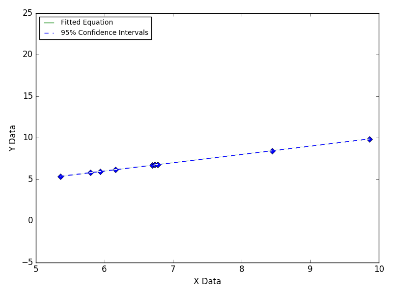
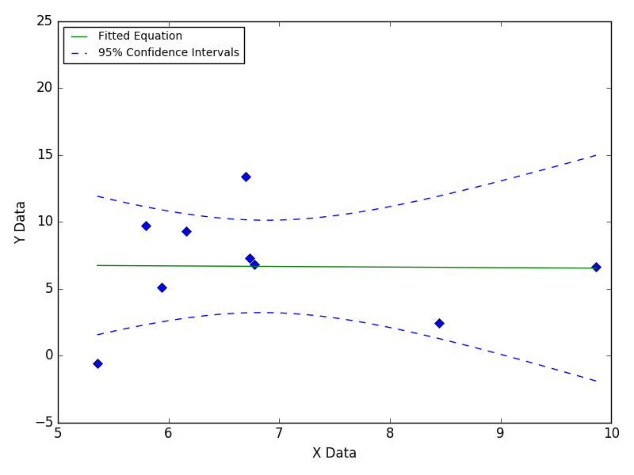
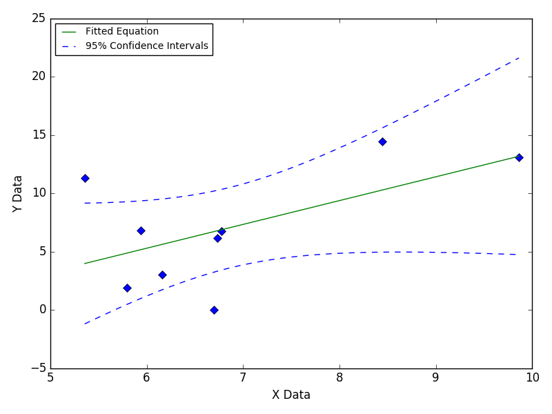

Data Scatter Over Entire Range
The effect of data scatter can be reduced by increasing the total number of data points.

Still Images


The effect of data scatter can be reduced by increasing the total number of data points.


